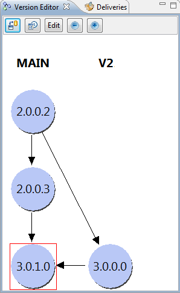
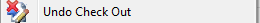

neXtep designer is all about version control. Therefore everything is versionable within the environment. You can easily control versions of all objects of the environment via several tools.
Since versioning is everywhere, a version view is always shown in the environment. The view is refreshed each time you select / edit an object and always show you the version tree of the object you are currently working with. It allows you to see the version history of any object very quickly.

This is a screenshot of the version editor which is always displayed at the upper left of your environment (note that you can change this position if you like). If you accidentally close this view, you can make it reappear by the Window > Show version navigator menu. It will always be restored when you change the view from Repository > Change view menu.
In this view we can see that the selected / edited object version is marked by a surrounding red box. Other versions are shown graphically to quickly see inheritance. You can quickly compare the current version with another by the comparison tool in the upper toolbox. To do this you only have to select (click) any version in the tree and click the button. You will then see the comparison dialog which will show you differences between the 2 selected versions.
For advanced users, you will also be able to edit the current version information (if and only if you are working with a modifiable version) by clicking the “Edit” button.
When you first create any object in a view or module, this object will automatically have a new initial and modifiable version 1.0.0.0. This will be the root version of your new element. Now you will be able to control the versions of this element by 3 actions which will always be proposed for this element :

These 3 actions will appear for any versionable element in the contextual popup menu when you right-click an element or in the toolbar when you are editing or have selected a versionable object. These 3 actions will never be enabled at the same time :
You can commit a checked-out or unversioned version
You can checkout a committed version
You can undo-checkout a checked out version (that is to say all check-out versions except the root version)
When you Commit an element you freeze the element version. That is to say nobody will never be able to modify this element version in the future. If someone wants to modify this element, he will need to Check out it to create a brand new modifiable release.
When you Check out a committed element, you create a brand new version of this element. The new version will initially be exactly the same element except that it will be modifiable and have a different version information.
When you Undo Check Out a checked-out element, you cancel your modifications and restore the committed element from which this check-out had been performed. A confirmation message dialog will always ask you to confirm this operation since you will lose all non-committed changes to the element.